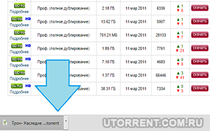
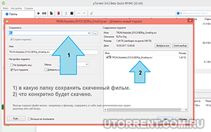

| Категория: | Торрнет-клиент | |
| Поддерживаемые ОС: | Windows 10 | |
| Разрядность: | 32 bit, 64 bit, x32, x64 | |
| Для устройств: | Компьютер | |
| Язык интерфейса: | на Русском | |
| Версия: | Последняя | |
| Разработчик: | BitTorrent, Inc. |
Не беспокойтесь проще пареной репы скачать uTorrent для Windows 10 сам по себе uTorrent один из лучших трекеров для обмена данными в формате P2P. Приложение использует все возможности передачи информации между пользователями, эта технология остается одной из самых быстрых по сравнению с большинством аналогов, включая стриминг-сервисы и средства для демонстрации потокового видео или прослушивания потокового аудио. Само по себе приложение на данный момент считается одним из самых мощных и быстродействующих для работы с торрент-файлами.
|  |  |  |
{kind=link}
{kind=link}
uTorrent для Windows 10 на компьютер
Windows 10 — основная на данный момент операционная система, установленная на миллионах персональных компьютеров и ноутбуков. Несмотря на появление более «свежей» одиннадцатой, «десятка» пока остается лидером по использованию, а Microsoft до сих пор не заявляла о прекращении поддержки операционной системы. Соответственно, все программы созданы так, чтобы работать в среде «десятки» с максимальной эффективностью. Это не в последнюю очередь относится к популярному торрент-клиенту uTorrent, который под Windows 10 чувствует себя просто замечательно и раскрывает свои возможности на все сто процентов.

При установке программа сразу же предложит ассоциировать файлы с расширением torrent с ней. Разумно будет позволить ей это сделать, тогда каждый загруженный «ярлык» будет по умолчанию открываться данным софтом по умолчанию, а скачивание начинаться без лишних задержек. uTorrent поддерживает анализ серверов, поиск подходящих клиентов, то есть, если ранее у какого-то человека, который стоял на раздаче, был нужный файл, а потом он выключил компьютер, то программа попытается автоматически найти адекватную замену и все-таки докачать нужный файл.
uTorrent для версий windows:
Возможности и преимущества uTorrent
Скачивание торрентов

Настройки скачивания

Создание торрент файла

Планировщик загрузок

Скачать uTorrent для Windows 10 бесплатно
| Приложение | OS | Распаковщик | Формат | Версия | Загрузка |
|---|---|---|---|---|---|
| uTorrent | Windows 10/11 | OpenBox | x32 | Бесплатно (на русском) | |
| uTorrent | Windows 10/11 | OpenBox | x64 | Бесплатно (на русском) | |
| uTorrent | Windows 10/11 | OpenBox | x32 — x64 | Бесплатно (на русском) |
Как установить uTorrent для windows 10:
Запустите файл.

Ознакомьтесь с информацией и нажмите "Далее".
Нажмите "Далее", или снимите галочки с рекомендуемого ПО и нажмите "Далее". Если снять все галочки, рекомендуемое ПО не установится!
После всех шагов нажмите "Установить".
У программы довольно много настроек, но большинство пользователей не используют и десятой доли из них, потому что просто не возникает такой необходимости. uTorrent превосходно работает «как есть», уже после запуска и инсталляции будучи полностью готовой предоставить все свои опции и возможности пользователям. Кроме того, uTorrent обладает рядом других преимуществ, одно из которых — поддержка русского языка. Дополнительно русифицировать приложение не придется, оно предложит выбрать русский на старте установки.
Сколько раз торрент выручал при скачивании больших файлов
простая в использовании для обычного пользователя компьютера
Через него фильма качал